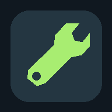

AutoMaster AI
Твой помощник в автосервисе03 / ИИ-наставник
Ответы Gemini не являются проверенной заводской инструкцией. Автопоиск документации отключён. Не отправляй VIN, госномера, лица или данные клиентов. Бесплатный сервис может использовать переданные данные согласно своим условиям.
Подключение ИИ
04 / Резервный режим ChatGPT
Скопируй запрос и отправь его в ChatGPT. Там можно приложить фото и получить объяснения со ссылками и иллюстрациями, если они доступны.
Открыть ChatGPT ↗История работ
Хранится только в этом браузере. Сделай резервную копию, если записи важны.
Как пользоваться
1. Заполни марку, модель, двигатель и задачу.
2. Выбери полную инструкцию или пошаговый режим.
3. Скопируй запрос, открой ChatGPT, вставь его и отправь. Фотографии автомобиля добавляй там же. При необходимости попроси указать конкретное крепление на твоём фото.
4. Сохрани ответ в истории. Для продолжения открой ту же беседу в ChatGPT.
Установка на iPhone
Открой опубликованный HTTPS-адрес в Safari → Поделиться → На экран «Домой» → Открывать как веб-приложение (если есть) → Добавить.
Ограничения
Программа не содержит заводской базы ремонтов и не декодирует VIN автоматически. Она формирует запросы, хранит записи и работает без отдельного API-ключа. Ответы и изображения отображаются в ChatGPT; текст можно перенести в историю вручную. Интернет нужен для работы ИИ.
Не добавляй ФИО, номера телефонов, госномера или данные клиента без разрешения. Удаление данных браузера удаляет историю.